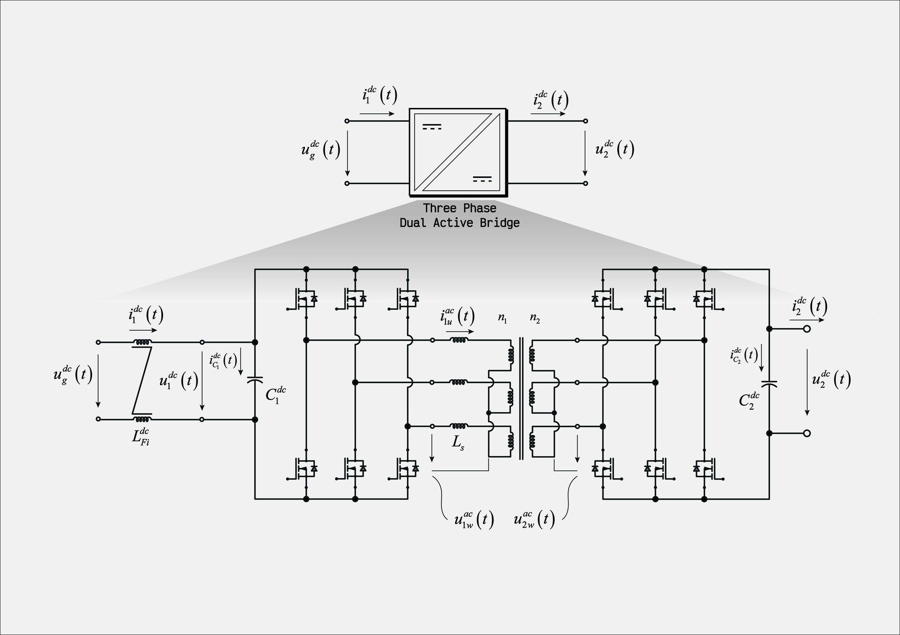

Three-phase dual active bridge (DAB3)
750 kW three-phase DAB: three half-bridge legs per side and a three-phase medium-frequency transformer, with AC-side waveforms, spectra and animated transformer quantities.

What it is
The three-phase DAB (DAB3) extends the single-phase converter to three legs per side and a three-phase medium-frequency transformer. The ripple on the DC links is much lower and the transformer is used more evenly, which makes it the natural choice when a single isolated stage has to carry several hundred kilowatts.
The bench is rated 750 kW and shares the device set, the timing (12 kHz, double update) and the control code of the single-phase DAB.
What the bench does
- AC-side voltages and currents of the transformer, the DC-link currents and the device losses over a full operating cycle.
- Spectrum of the transformer quantities and MP4 animations that show how the AC-side waveforms build up as the phase shift changes.
Video
 Three-phase DAB simulationTransformer quantities during a power-flow transient · YouTube
Three-phase DAB simulationTransformer quantities during a power-flow transient · YouTube